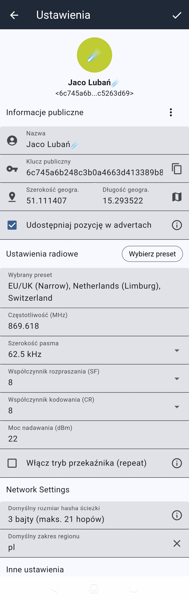
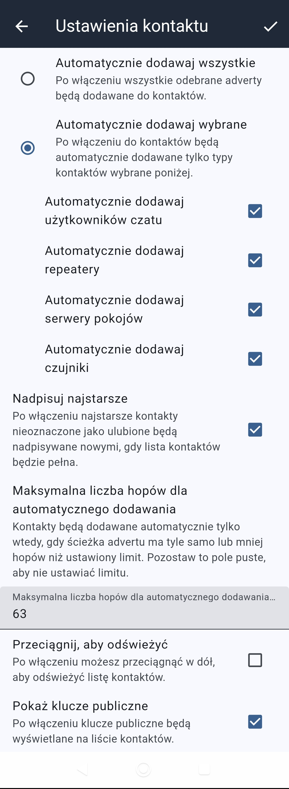
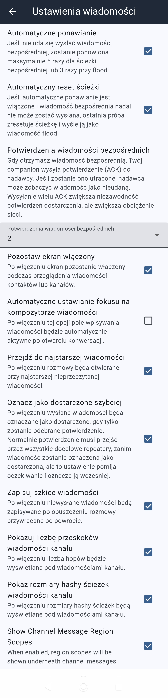

← Powrót do strony głównej
Companion – Urządzenie i Aplikacja do Rozmów
Jak połączyć telefon z kieszonkowym radiem MeshCore i rozmawiać bez zasięgu sieci komórkowej czy internetu. Komunikator służy do wymiany zwięzłych wiadomości tekstowych (do 150 znaków).
1. Sprzęt i oprogramowanie
Wszystkie urządzenia w sieci działają na paśmie 868 MHz (np. Heltec V3, T-Beam). Programowanie radia wykonasz w kilkanaście sekund bezpośrednio w przeglądarce:
Instalator oprogramowania w przeglądarce →
🗺️ Jak ustawić regiony na kanałach w Companionie?
Szczegółową instrukcję krok po kroku ze zdjęciami, pokazującą jak ustawić zakresy regionalne (scopes) na poszczególnych kanałach (np. pl, pl/ds, pl/ds/wro), znajdziesz w osobnym poradniku:
Instrukcja ustawiania regionów w Companionie →
2. Połączenie Bluetooth
- Włącz Bluetooth w telefonie oraz uruchom radio.
- Otwórz aplikację Companion i wybierz swoje urządzenie z listy (np.
MeshCore-XXXX).
3. Ustawienia podstawowe i radiowe
Kliknij ikonkę koła zębatego (Ustawienia) w prawym górnym rogu aplikacji. W tym miejscu możesz skonfigurować swoje dane publiczne oraz parametry radiowe i sieciowe:
- Informacje publiczne: Ustaw swoją Nazwę (np.
Jaco Lubań), i (jeżeli chcesz pojawiać się na mapie) współrzędne geograficzne oraz opcję Udostępniaj pozycję w advertach.
- Ustawienia radiowe: Wybierz odpowiedni preset (np.
EU/UK (Narrow) dla Polski) lub dostosuj częstotliwość (np. 869.618 MHz) oraz moc nadawania. Nie włączaj opcji Tryb przekaźnika (repeat) na urządzeniu mobilnym.
- Network Settings: Ustaw Domyślny rozmiar hasha ścieżki na 3 bajty (maks. 21 hopów) oraz Domyślny zakres regionu wpisując
pl.
Zapisz konfigurację ikonką ptaszka w prawym górnym rogu.

Kliknij obraz, aby powiększyć: Ekran główny ustawień z danymi węzła, parametrami radia oraz regionem pl
4. Ustawienia kontaktów
W sekcji Ustawienia kontaktu decydujesz, w jaki sposób companion zapisuje odnalezione w sieci węzły:
- Automatyczne dodawanie: Wybierz Automatycznie dodawaj wybrane i zaznacz jakiego typu urządzenia chcesz dodawać do kontaktów: użytkowników czatu, repeatery, room servery oraz sensory.
- Nadpisuj najstarsze: Włącz tę opcję, aby pełna lista kontaktów automatycznie zwalniała miejsce usuwając nieoznaczone jako ulubione, najstarsze pozycje.
- Maksymalna liczba hopów: Pozostaw pole puste lub ustaw limit (np.
6), aby dodawać tylko bliższe urządzenia.
- Pokaż klucze publiczne: Zalecane włączenie opcji w celu łatwiejszej weryfikacji tożsamości użytkowników na liście kontaktów.

Kliknij obraz, aby powiększyć: Opcje automatycznego dodawania i zarządzania listą kontaktów
5. Ustawienia wiadomości i transmisji
W zakładce Ustawienia wiadomości skonfigurujesz zachowanie komunikatora podczas nadawania i odbierania komunikatów:
- Automatyczne ponawianie i reset ścieżki: Zaznacz obie opcje, aby aplikacja sama próbowała ponownie wysłać niepotwierdzoną wiadomość prywatną lub zmieniła tryb na flood.
- Potwierdzenia wiadomości bezpośrednich (ACK): Domyślnie ustaw wartość 2 dla optymalnej niezawodności bez zbędnego obciążania sieci.
- Oznacz jako dostarczone szybciej: Włącz tę opcję, aby otrzymać informację o dostarczeniu od razu po pierwszym odebranym potwierdzeniu.
- Opcje dodatkowe: Warto włączyć Pokazuj liczbę przeskoków, Pokaż rozmiary hashy ścieżek oraz Show Channel Messages Region Scopes.

Kliknij obraz, aby powiększyć: Szczegółowe opcje dostarczania wiadomości, ponawiania prób i potwierdzeń ACK